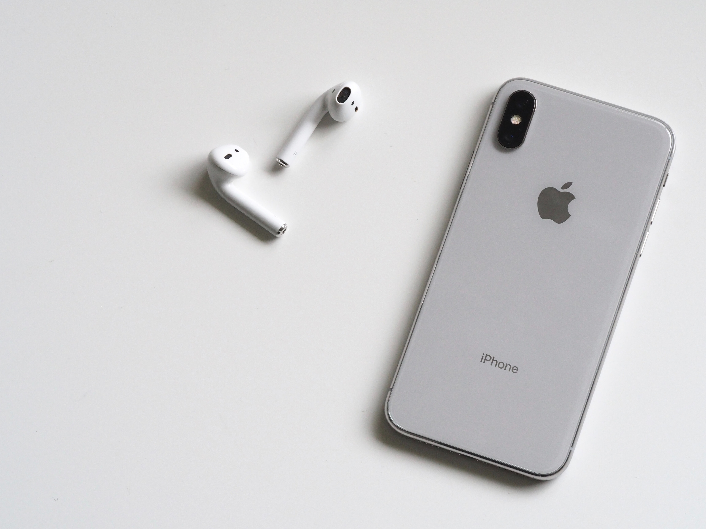

AKSHAY TECH
welcome to my world of blog
Akshay Udupa
He is a Tech youtuber
BEST MOBILE IN 2019
title description,Aug 12,2019 Mobile blogging (also known as moblogging) is a method of publishing to a website or blog from a mobile phone or other handheld device. A moblog helps habitual bloggers to post write-ups directly from their phones even when on the move. Mobile blogging has been made possible by technological convergence, as bloggers have been able to write, record and upload different media all from a single, mobile device. At the height of its growth in 2006, mobile blogging experienced 70,000 blog creations a day and 29,100 blog posts an hour.
Between 2006 and 2010, blogging among teens declined from 28% to 14%, while blogging among adults over 30 increased from 7% to 11%. However, the growing number of multi-platform blogging apps has increased mobile blogging popularity in recent years creating a brand new market that many celebrities, regular bloggers and are utilizing to widen their social reach.
BEST MOBILE IN 2020
title description,Aug 12,2020
Mobile blogging (also known as moblogging) is a method of publishing to a website or blog from a mobile phone or other handheld device. A moblog helps habitual bloggers to post write-ups directly from their phones even when on the move. Mobile blogging has been made possible by technological convergence, as bloggers have been able to write, record and upload different media all from a single, mobile device. At the height of its growth in 2006, mobile blogging experienced 70,000 blog creations a day and 29,100 blog posts an hour.
Between 2006 and 2010, blogging among teens declined from 28% to 14%, while blogging among adults over 30 increased from 7% to 11%. However, the growing number of multi-platform blogging apps has increased mobile blogging popularity in recent years creating a brand new market that many celebrities, regular bloggers and are utilizing to widen their social reach.
BEST MOBILE IN 2021
title description,Aug 12,2021
Mobile blogging (also known as moblogging) is a method of publishing to a website or blog from a mobile phone or other handheld device. A moblog helps habitual bloggers to post write-ups directly from their phones even when on the move. Mobile blogging has been made possible by technological convergence, as bloggers have been able to write, record and upload different media all from a single, mobile device. At the height of its growth in 2006, mobile blogging experienced 70,000 blog creations a day and 29,100 blog posts an hour.
Between 2006 and 2010, blogging among teens declined from 28% to 14%, while blogging among adults over 30 increased from 7% to 11%. However, the growing number of multi-platform blogging apps has increased mobile blogging popularity in recent years creating a brand new market that many celebrities, regular bloggers and are utilizing to widen their social reach.